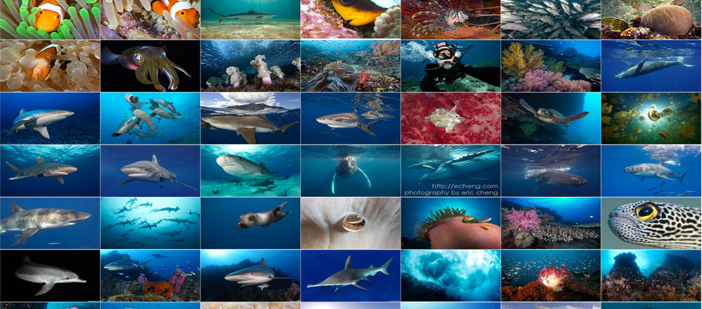

Marine life, or sea life or ocean life, is the plants, animals and other organisms that live in the
salt water of the sea or ocean, or the brackish water of coastal estuaries. At a fundamental level,
marine life affects the nature of the planet. Marine organisms produce oxygen and sequester carbon.
Shorelines are in part shaped and protected by marine life, and some marine organisms even help
create new land. The term marine comes from the Latin mare, meaning sea or ocean.Most life forms
evolved initially in marine habitats. By volume, oceans provide about 90 percent of the living space
on the planet. The earliest vertebrates appeared in the form of fish, which live exclusively in water.
Some of these evolved into amphibians which spend portions of their lives in water and portions on
land. Other fish evolved into land mammals and subsequently returned to the ocean as seals, dolphins
or whales. Plant forms such as kelp and algae grow in the water and are the basis for some underwater
ecosystems. Plankton forms the general foundation of the ocean food chain, particularly the
phytoplankton which are key primary producers.

Marine invertebrates exhibit a wide range of modifications to survive in poorly oxygenated waters,
including breathing tubes as in mollusc siphons. Fish have gills instead of lungs, although some
species of fish, such as the lungfish, have both. Marine mammals, such as dolphins, whales, otters,
and seals need to surface periodically to breathe air.There are over 200,000 documented marine
species with perhaps two million marine species yet to be documented. Marine species range in size
from the microscopic, including phytoplankton which can be as small as 0.02 micrometres, to huge
cetaceans (whales, dolphins and porpoises), including the blue whale – the largest known animal
reaching 33 metres (108 ft) in length. Marine microorganisms, including protists, bacteria and
viruses, constitute about 70% of the total marine biomass.